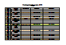

Sie sehen hier den Eingang zu unserer Kirche.
Treten Sie ein, in eine für alle offene Gemeinde!
Besuchen Sie uns auch auf Facebook
Wir haben für Sie umfangreiche Informationen über uns und unsere Aktivitäten. Am besten klicken Sie sich ein bisschen durch - es gibt viel zu entdecken!
So zum Beispiel können Sie unter Gemeinde die Gemeindebriefe online lesen!
Fotos von Veranstaltungen gibt es bei den Rückblicken!
Jugendliche laden wir zu einem tollen Kreis ein!
Wir haben sogar eine eigene Lobpreisband!
Den aktuellen Kindergottesdienstplan finden sie hier! 
Jeweils am Mittwoch von 19.00 - 20.30 Uhr im Gemeindesaal.
Nächster Termin am 17. Juni 2015
Do., 4. Juni. 2015